![Basinga est un collectif rassemblé autour de l'art du Funambule.
Nous ne sommes que la gestion continue de nos déséquilibres.
Ces déséquilibres nous poussent les uns vers les autres. Nous appuient. Nous font chuter. Ou rebondir.
Pour nous tenir, nous maintenir, et avancer, nous tissons des liens. Jetons des ponts Nous raccrochons aux murs. Aux branches.
Les uns aux autres.
Par la recherche, l'enseignement, le partage et la production de spectacles participatifs de haut vol, Basinga cherche à développer, étoffer, transmettre et communiquer cet art qui, mieux qu'aucun autre, évoque en quoi notre grandeur repose sur nos fragilités, et notre capacité à savoir les conjuguer.
Ce qui nous relie nous consolide. Lignes Ouvertes](../images/presbasinga8bitdef_anglais.jpg)
The team
The Company was established in Sauve in January 2014 at the initiative of :
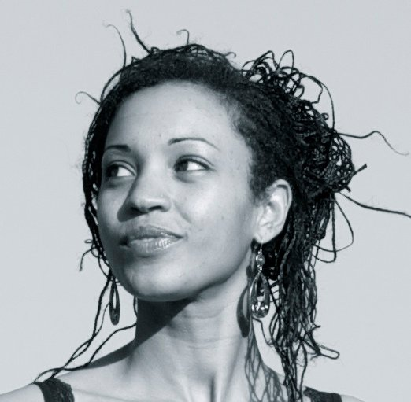
Tatiana-Mosio BONGONGA
Co/founder, Artistic Director, Highwire
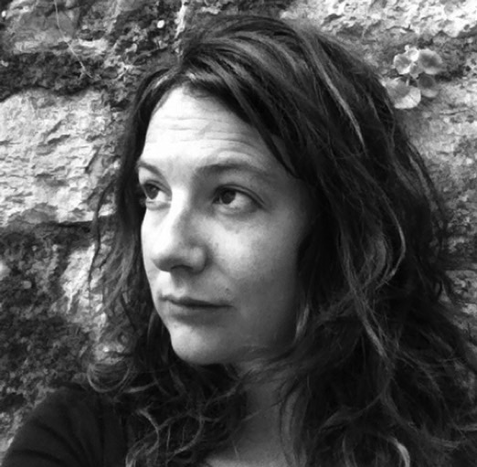
Émilie PÉCUNIA
Co/founder, general management
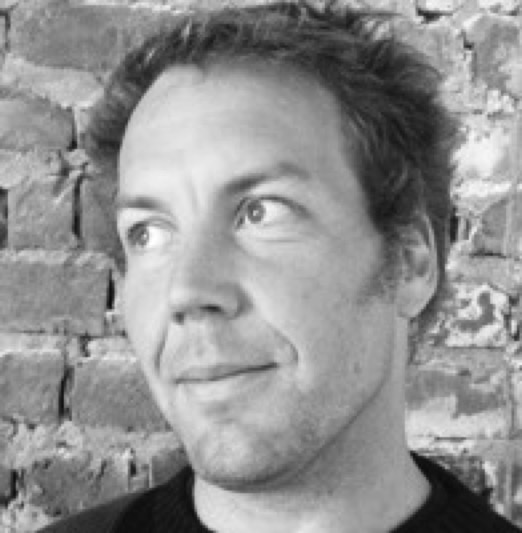
Jan NAETS
Co/founder, technical direction, researcher in new materials.
Artistic and technical team:
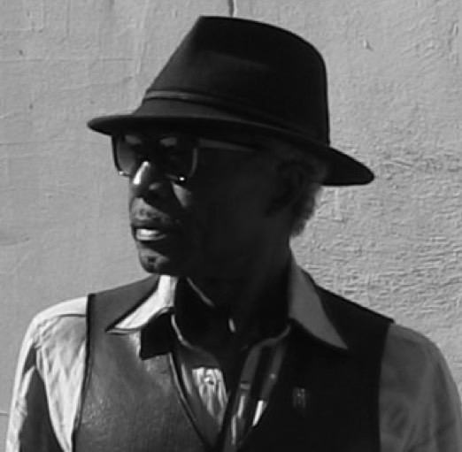
Cyriaque Kombé BONGONGA
Musical direction, singer, guitar
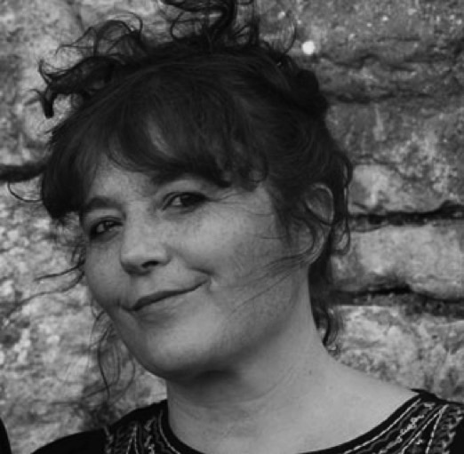
Pascale VALENTA
Musical direction, singer
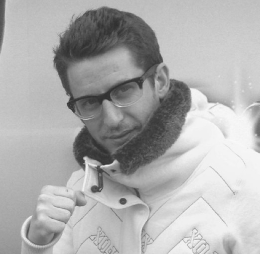
Antonin LEYMARIE
Musical direction, percussion, drums
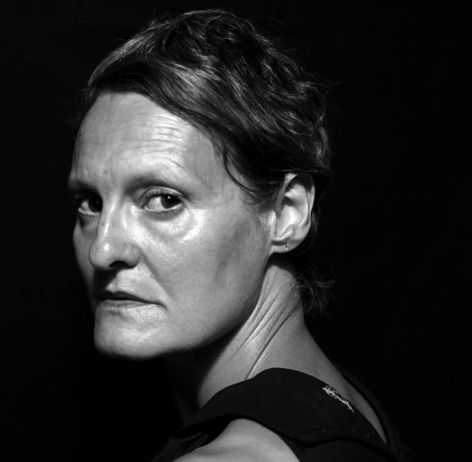
Anna RODRIGUEZ
Chorégraphe

Solenne CAPMAS
Costume & set design
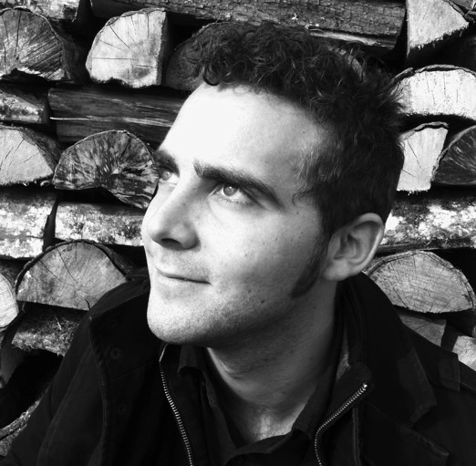
Max LEYNELE
Sound design
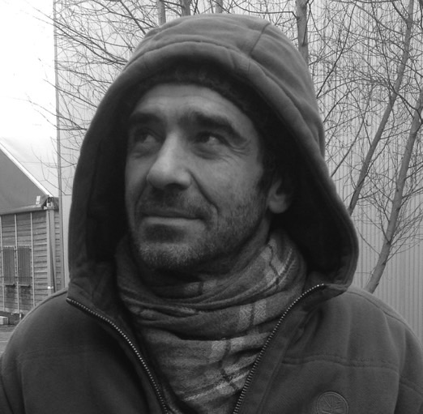
Frédéric MÉRAT
light design
But also with the help of :
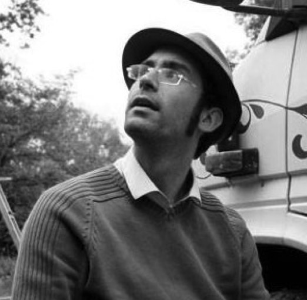
Fabien GRANIER
Production, booking
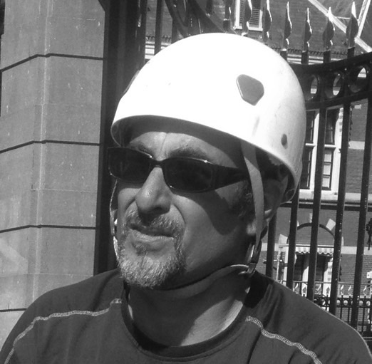
Olivier ROUSTAN
technician, highwire walker
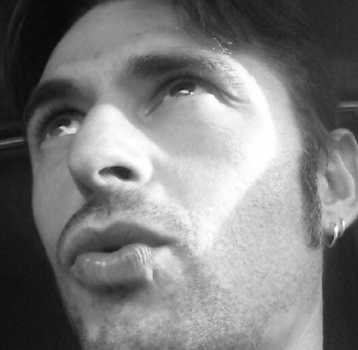
Jean-Christophe CAUMES
technician, builder
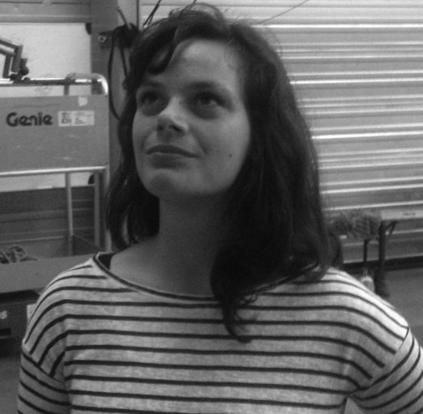
Sophie DEL CASTELBAJAC
writing
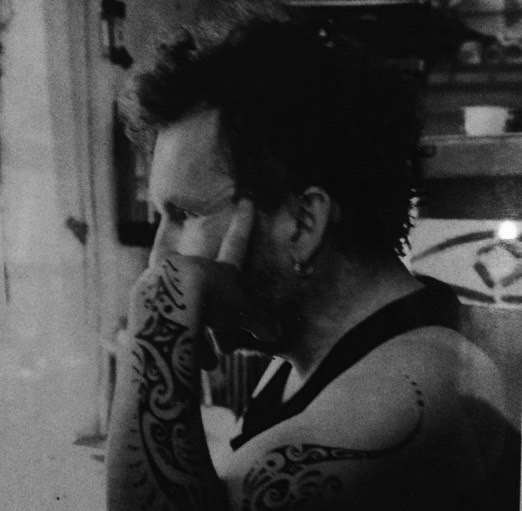
Bruno HOCQUARD
Teaser
TEASER: